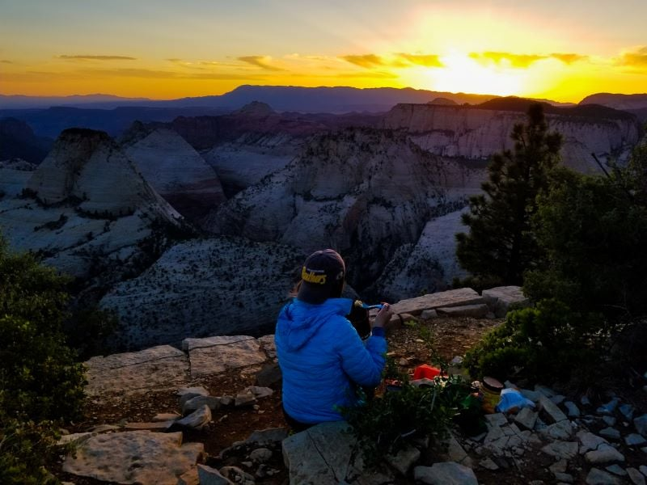

Hiking and backcountry camping along the West Rim Trail in Zion National Park continues to stand out as one of the best outdoor adventures my husband and I have shared together.
The natural beauty, breathtaking views, and opportunity to feel completely alone in one of the United States most popular national parks really solidified the entire experience for us.

Backcountry camping in Zion National Park. Photo: Stephanie from Travanie Travels
Starting at the Grotto trailhead along the main road in Zion, our hike involved climbing 6.6 miles to the top of the western plateau of Zion Canyon and gaining 3,100 feet of elevation.
Our route passed through the notoriously difficult Walters Wiggles and went far above Angels Landing. It was a challenging, muscle-burning, and overall exhausting climb especially with all of our camping gear, food, and water loaded up in our
However, the higher we climbed the better the views became, and the more we felt that the effort was worth every step. By the time we reached the top, the West Rim Trail had completely exceeded all of our expectations.
The incredible views overlooking Zions magnificent canyons, the unique desert rocks, landscapes, and wildlife not to mention the magical feeling of being on top of the world while standing at the rim of the plateau — made us forget about all the sweat and exertion it took to get to the top.
In total, it took us six hours to reach our campsite and we arrived with just enough time to set up our tent, prepare some instant noodles for dinner, and watch the sunset from the rim of the plateau.
We spent the remainder of the night relaxing and watching the sky transition from brilliant orange to multiple shades of deep, dark blues and gazing at the stars in the clear sky. It was the perfect way to end the day.
Tips: The West Rim Trail can be hiked as a backpacking overnight or as an out-and-back day hike depending on your experience and fitness level.
For anyone looking to hike the West Rim Trail, we highly recommend stopping at the ranger stations for updates on trail conditions, weather, and advice before heading out on the trail.
If youre planning to camp overnight, youll also need to stop at Zions backcountry office to secure your backcountry permits in advance of your trip!